没有标题~
识别文字连续阅读 · 原图附后
原始 PDF 不公开，本页展示捕获页面的截图。 识别文字按页序连续显示，全部原始截图附在文末，便于对照。文字由视觉转录整理，尚未经人工逐字核对，可能存在错字、漏字、漏行、顺序或断行错误。留言与作者回复仅限截图中可见的内容，不代表完整线上留言，也未据此推断留言总数。
OCR 识别提示（待核对）
- OCR/视觉转录文字，尚未逐字校对；可能错字、漏字、漏行，数字、姓名、表情、标点及断行也可能有误，请以截图为准。
- 这里只保留 PDF 已截到的正文、留言和作者回复；截图以外的留言不在此存档中。
- 未从截图推断留言总数或回复关系；手机界面文字也可能混入 OCR。
- 方括号中的表情说明是转录注释，原始表情请对照截图。
- 页面边界仅露出少量字形的重复行归到文字主体可见的相邻页；不推断缺失内容。
识别文字
文字按截图页序整理；页边重复行仅保留一次，原始 PDF 不公开。方括号中的表情说明为转录注释。
第 1 页对照原图
[顶部状态栏]
10:37 · 4G · 电量61%
没有标题~
原创 天玑 金渐成 2026年11月16日 10:07 美国
461人 AI摘要
标普500微跌，纳指跌0.9%，纳指100跌1.22%；
科技股中，芯片类跌幅较大，博通跌4.76%，AMD跌8.75%，英伟达跌2%...
英伟达短期内预计将持续震荡，近期即将公布财报，预计数据会相当不错，但要等芯片出口的调查结果出来，震荡才有可能结束。
如果违规出口确实存在，那么英伟达可能面临罚款和更严格的监管。
进取型账户中清一色科技巨头，因此今年跟坐过山车似的，收益率从37%缩水至20%+了。
第 2 页对照原图
科技股一震荡，资金就往别的板块流入避险：
可口可乐等消费龙头股涨幅大，股价创历史新高；礼来等医药龙头涨幅也大，股价创历史新高；伯克希尔这类具有避险属性的防守型个股，股价也创历史新高；连带着SCHD这类红利股ETF，股价也在历史高位上。
去年底我做防守型账户，配置红利股ETF进来时，那会价格还在25美元以内，现在已经36+美元了，一路高涨，导致红利股ETF的仓位只完成了计划的60%，余下的40%至今一直没打出去，同样的还有可口可乐，也只完成了50%的仓位。
这两个余下没打出去的资金，今年上半年被我加在了抄底465-475的伯克希尔上。
在我的预期中，进取型账户的占比最高不超过50%，超过了我会做投资再平衡。后续会控制在35-40%之间。
美股七巨头这类科技股在标普500ETF中的占比越来越高，有些人有顾虑，因此除了持有常见的SPY、VOO、IVV这类常见的标普500ETF，还持有等权比重的RSP这类标普500ETF，不过会相对小众些。
第 3 页对照原图
国内的闲置资金越来越多，主要是几年前的一些高息定存陆续到期了。我看了一圈，实在没什么东西买：
滚IC初看适合自己，再深入了解后才发现不适配；红利股ETF目前不满足我的安全边际需求；场内的标普和纳指两宽基指数ETF，溢价率太高。
然后就没什么想法了，继续耐心等，只通过港股通买了点港股放着，持仓的目前价格已跌到我加仓范围内。
越南今年的经济数据很好看，前三季度GDP增长超9%，消费增长超14%，一熟人问我要不要一起去看看。
我没有投这类新兴市场，就不打算去了。
越南加入CPTPP后，也在不断改革，去适配CPTPP的要求：
不允许随便出政策折腾民营企业，私有财产和投资权必须刚性保护，本土和外资一视同仁。
这样看也挺好的，国家把契约立住了，市场的事交给市场，规则不能说变就变。如此，等于给全球资本吃了定
第 4 页对照原图
心丸，资本自然涌入。
… …
现在读者越来越多，坑和陷阱也越来越多，我不得不更谨慎。
比如前几天有人留言说，他找了个女朋友，长得很漂亮，是做YC的，自己心理还是会有点疙瘩。
我心想，你小子还不错嘛，能找个做YC，有颜值有能力，顶级创投（Y Combinator简称YC），和VC一样都考验考验识人的眼力。
后来才知道他说的是夜场，夜场就夜场嘛，有什么不能直说的，非要用拼音...我差点踩坑里去。
男人就是这样，虽然也看女人颜值，但选择配偶时颜值就不是第一位了。
但我个人发现，很多女性选择伴侣时，会把颜值、经济、工作/收入、性格排在前列，人品这类最重要的甚至被排到很后面或不怎么去考虑，确实有点本末倒置了。
第 5 页对照原图
至于要不要拿“情绪价值”说事，得看自身的情况。有能耐的人解决问题，对他们来说，我都能解决问题了，为什么还要给别人提供情绪价值？只有制造麻烦的人，往往才喜欢提供情绪价值的。
现在的舆论，往往制造男女对立，甚至在结婚这事上，也吵得不可开交。
我个人很不喜欢这种环境，所以这类话题也很少涉及，自己喜欢怎么样就怎么过，没必要向他人强行灌输自己的观点，自己的观点没那么重要。
如果从现实的角度切入:对男的来说，结婚需要门槛;对女的来说，不结婚需要门槛。
… …
今天老二给老三辅导作业时，说了一句话，我印象有点深：
她让老三要好好读书，心思不要都在玩上面。虽然读书不是唯一出路，但不读书会少很多出路。
第 6 页对照原图
我们之前从来没跟她说过这类的话，没有要求他们一定要走读书这条路。
我只跟他们说过“做任何事，要么不做，要做就尽力去做到最好”这类的话。
老大给老二辅导课业，老二给老三辅导课业，这几年下来效果很不错。他们不仅要把自己理解的知识用通俗易懂的方式表达让对方理解，还能在这个过程中感受人和人之间对知识的理解不同。
当然，也顺便赚点家教费，在国内时一般一节课会给他们100-200块，考试成绩出来后再根据情况适当给奖金。费用我出三分一，被辅导课业的人出三分二。
自从六年前这么做以后，我媳妇不再情绪波动大，家里氛围好太多了。
用我们家老大的话来说，被大声吼叫的时候，大脑已经进入应激逃跑模式，耳朵听不进任何知识点，能记住的只有恐惧，只想躲开。这时再怎么讲解，知识都不愿意留在他的脑子里。
老大的学习成绩拔尖，中考成绩在上海名列前茅，但他小学1-3年级时也一样被纠正过各种问题。
第 7 页对照原图
我们夫妻俩以前没少为这事争执，后来就统一理念，小学以培养好的学习习惯为主，每天要适当给孩子一些玩耍和放松空间。
后来老二老三带起来就顺利多了，学习的事也没操心过，有了更多的耐心，主要是也不需要鸡娃，孩子能学到哪就学到哪。
结果老二老三反而越往后学习越好，自己也很想学。主要还是从学习中获得了更多的成就感，有了足够的自驱力。
我父亲现在每次看到娃们都给红包，总能找各种理由给，学习成绩好、主动帮忙做家务...总能让他找到个理由塞红包，什么怎么劝都没用。
孩子们也都很喜欢他，三天两头打电话跟爷爷问好。老三更是如此，以前连台风天来了都会主动要求给爷爷打电话，说是怕爷爷被台风卷走了，自己没鸡蛋吃，哈哈哈。
有时我会想，要是我母亲也能经历这些就好了，不知道会有多开心。
第 8 页对照原图
记忆中，小时候母亲很高，能背着我走很远的路。后来，我慢慢长大了，她开始一直比我矮，直到最后我把头磕在地上，她还是比我矮。
遗憾总是人生常态。
就这样吧。
[文章导航与提示]
历史文章 · 目录
< 上一篇 · 此刻心定~
作者提示：个人观点，仅供参考
阅读 3.6万 · 修改于2026年11月16日 · 不喜欢
留言 24
[留言 1]
颖｜广东｜26分钟前｜赞153
倒数第三段最后一句泪直接涌出来
第 9 页对照原图
[作者回复留言 1]
金渐成（作者）｜24分钟前｜赞379
痛不是当时，而是之后想念母亲的每一天。
[留言 2]
飞鹰｜北京｜27分钟前｜赞18
玑哥，你是英伟达的股东，盲猜你支持他回归。如果你是英伟达的董事，你会支持黄仁勋回归吗？
[作者回复留言 2]
金渐成（作者）｜24分钟前｜赞230
大多数人都喜欢去假设，我不喜欢，怎么去应对没有黄仁勋的英伟达才是重点。
[留言 3]
请叫我葡荀君｜北京｜24分钟前｜赞24
经常去 LV 扫货。高大上理解：路易威登（Louis Vuitton）；实际意思：驴肉火烧[狗头表情]。
做 BP 的。高大上理解：商业计划书（Business Plan）或人力资源业务伙伴（HRBP）。实际意思：摆拍（拍照打卡、做做样子的网红或微商）[捂脸哭笑表情]
[作者回复留言 3]
金渐成（作者）｜21分钟前｜赞140
好好的中文不说，非要搞拼音，不知道的还以为是英文缩写。酒不说酒，要说8+1，钱不说钱，要说米...搞不懂都什么玩意[捂脸哭笑表情]
[留言 4]
四月是我的谎言｜浙江｜26分钟前｜赞48
把契约立住了，经济发展才能不烧心
[作者回复留言 4]
金渐成（作者）｜23分钟前｜赞127
咱们做企业做生意的人，最怕规则朝令夕改，契约可
第 10 页对照原图
太重要了，无信不立。
[留言 5]
KYr｜广东｜24分钟前｜赞22
记忆中，好像看到机哥很少写到母亲，只在评论中谈起过一次，不知道机哥是如何面对死亡这种人生大事的，应该以何种的心态来度过
[作者回复留言 5]
金渐成（作者）｜16分钟前｜赞111
我母亲去世时，我在外地，没见上最后一面，等我第二天赶到家时，整个人脑子里已经是一片空白了，当时根本哭不出来。后来就是工作，大量的时间花在工作上，不久后又是我的人生低谷期，事业和感情都不顺利，我抑郁。不过这些也不都是坏事，收获了现在一路同行的媳妇。
[留言 6]
張越｜上海｜17分钟前｜赞30
我也很讨厌国内最近的网络环境。不过女拳是自媒体机构的一群人在炒，炒反女拳的还是这家机构、宣扬内卷实现个人价值的是某些媒体，宣扬要躺平的还是这家媒体的另一波人。不管怎么都有适合你的那款，一句话全都是流量，全都是生意、
[作者回复留言 6]
金渐成（作者）｜15分钟前｜赞90
在互联网上，你的情绪就是他人的生意。所以不要被带情绪，情绪由自己掌控。
[留言 7]
SZ｜广东｜17分钟前｜赞15
YC哈哈哈哈哈哈，对着手机笑出声。我闺女应该跟机哥老二差不多大，曾经我也这样吼过她的英语，没多久观察到
第 11 页对照原图
她的应激模式后，果断先把她送到一个以阅读为主的机构，先拉开距离。我初中才开始学英语，一路很轻松，我就理解不了她怎么不开窍，反思以后惊觉，我并没有在低龄学语言的经历，即使我有，我也不该用我的经验去评判她。
[作者回复留言 7]
金渐成（作者）｜13分钟前｜赞59
你能及时反应过来并采取措施，已经很好了，胜过很多父母。有些父母是越吼娃越学不进去，然后自己情绪越来越激动，直接把好好的孩子搞傻了，每天面对情绪激动的父母，直接进入应激反应。
[留言 8]
戈殳皓旰｜越南｜18分钟前｜赞8
身边就有大厂的兄弟离婚找了夜场妹子。
感觉婚姻就是个同盟，有个可靠的人最重要。然后聪明的最好。
[作者回复留言 8]
金渐成（作者）｜11分钟前｜赞49
蠢和坏一样都很致命[捂脸哭笑表情]，找伴侣，能兼顾善良+聪明，就已经很难得。
[留言 9]
快乐多多｜天津｜19分钟前｜赞9
看到最后，莫名的很伤感。上周带父母出去玩，父亲走一个小坡竟然摔倒了，我和妹妹两个人使劲才扶起来，才意识到父母是真的年纪大了（快八十了）
[作者回复留言 9]
金渐成（作者）｜9分钟前｜赞36
老人65岁以后，要特别小心摔倒这事，身体是一个平衡的系统，上了年纪就怕摔了之类的，你可以查一查这方面的知识。
第 12 页对照原图
[留言 10]
向着时光挥手｜江苏｜19分钟前｜赞2
机哥还是年轻了，YC居然不知道是夜场哈哈哈(#^.^#)
[作者回复留言 10]
金渐成（作者）｜7分钟前｜赞33
长这么大，我还没去过夜场，也理解不来那场所有啥吸引力，可能天生气场不合。叠加我做一级市场VC和二级市场投资的经历，看到YC自然第一反应想到的就是行业相关的[捂脸哭笑表情]
[留言 11]
Winy｜上海｜21分钟前｜赞3
学习越来越好说明本身天赋好，适当纠偏就能突飞猛进
[作者回复留言 11]
金渐成（作者）｜3分钟前｜赞18
学习习惯好，自驱力足，慢慢就会进入滚雪球效应一样的正反馈。都说孩子们会均值回归，目前我还没体验过，要看看后面两个小奶娃会怎么样，身边有个朋友，5个孩子，4个常春藤名校毕业，1个也是顶尖名校毕业，我就觉得他家培养孩子确实厉害，最近一年也没少沟通，发现理念和方式都大差不差。
[留言 12]
小林子｜上海｜21分钟前｜赞4
之前看到一个数据，越南人口中35岁以下占70%。国内感觉长沙好年轻，好有活力，当然有点不习惯的是街上拉客的都是年轻女性。
[作者回复留言 12]
金渐成（作者）｜2分钟前｜赞9
长沙的夜色经济据说很发达，具体怎样就不知道了，没去过。不过湖南的妹子，精明能干，脾气也不是吃
第 13 页对照原图
素的，哈哈哈
[底部界面]
金渐成（认证标记）
点赞 1489 · 分享 808 · 喜欢 237 · 留言 24
原始图片 · 13 页
第 1 页 · 原始截图

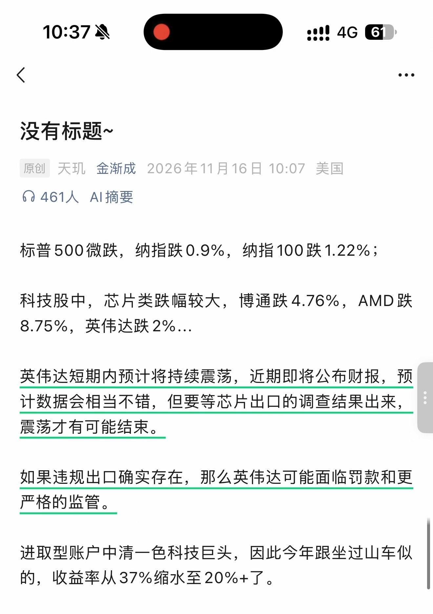
第 2 页 · 原始截图

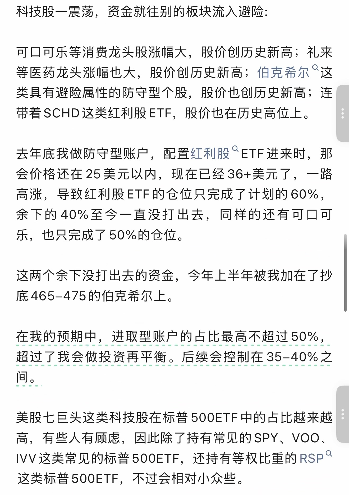
第 3 页 · 原始截图

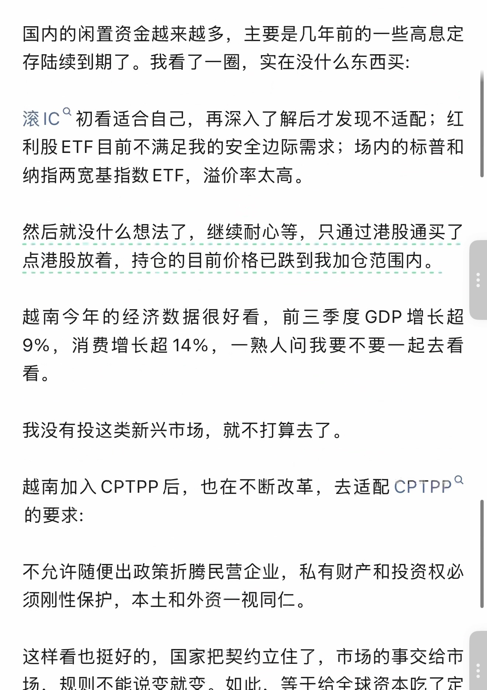
第 4 页 · 原始截图

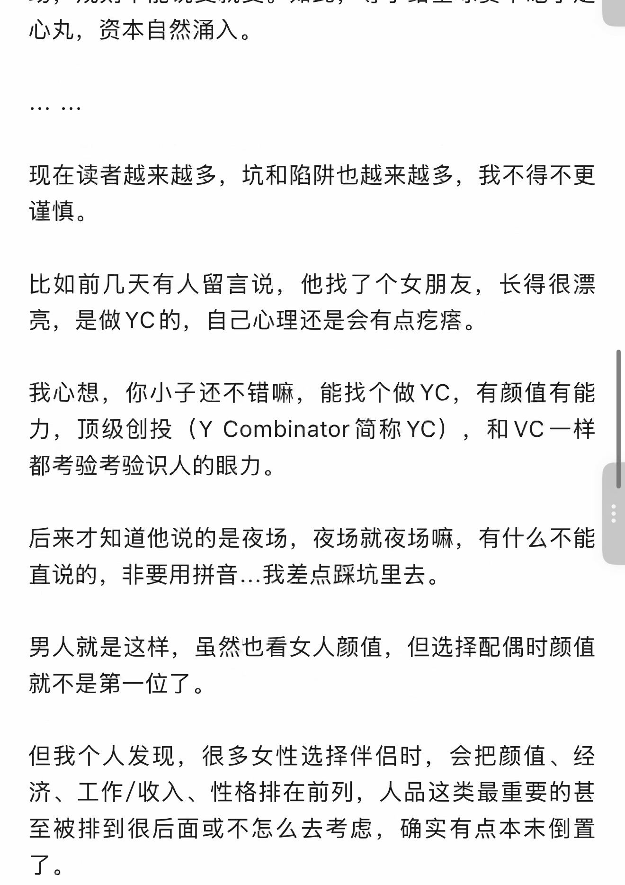
第 5 页 · 原始截图

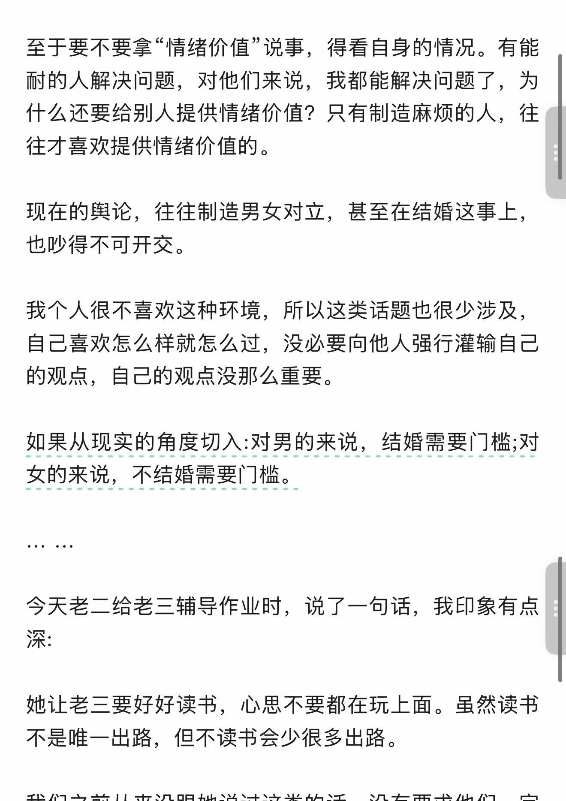
第 6 页 · 原始截图

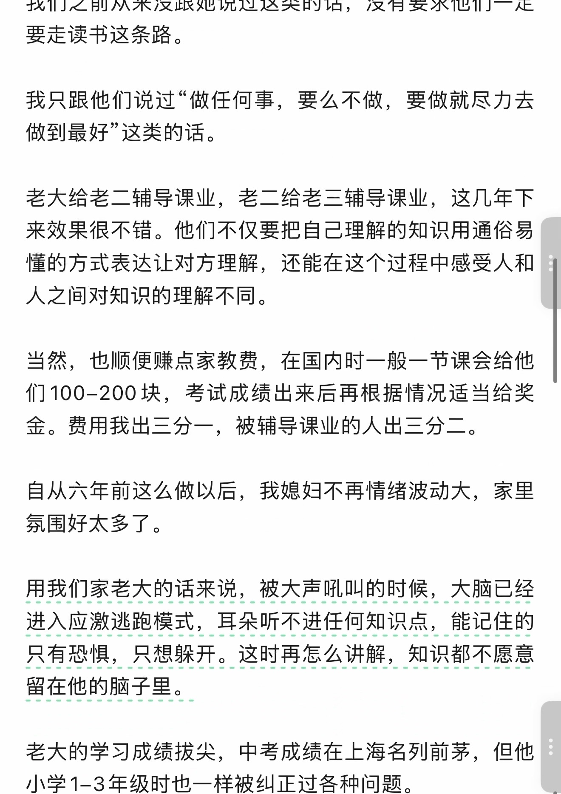
第 7 页 · 原始截图

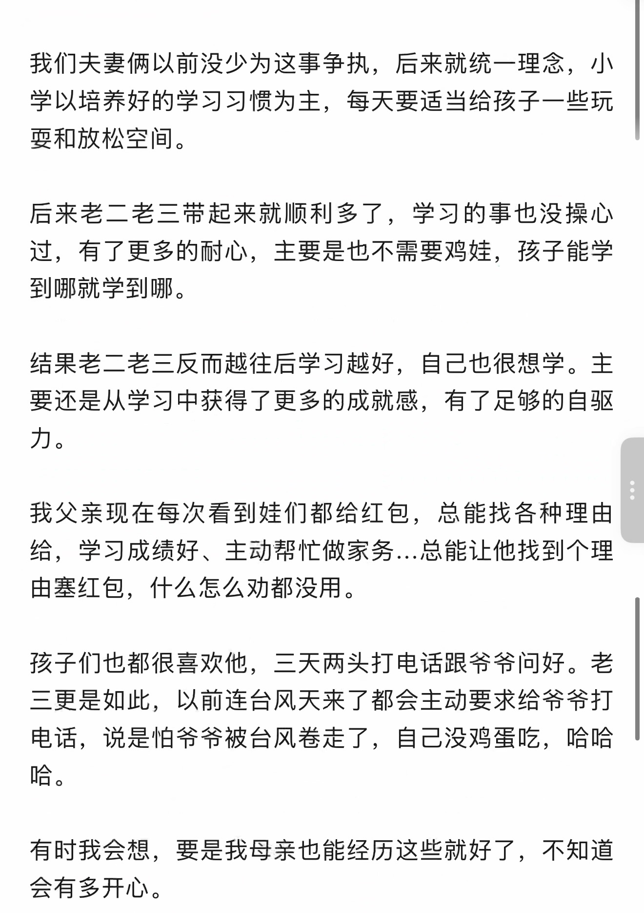
第 8 页 · 原始截图

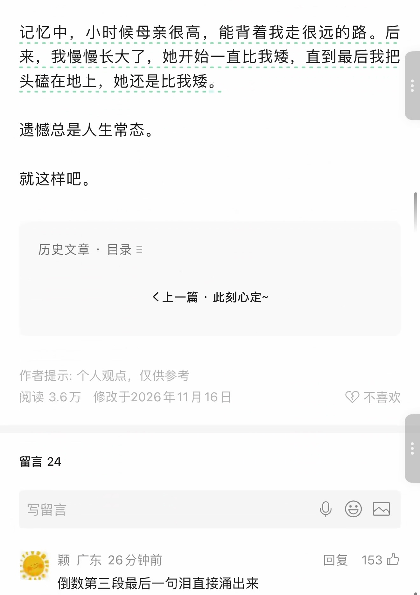
第 9 页 · 原始截图

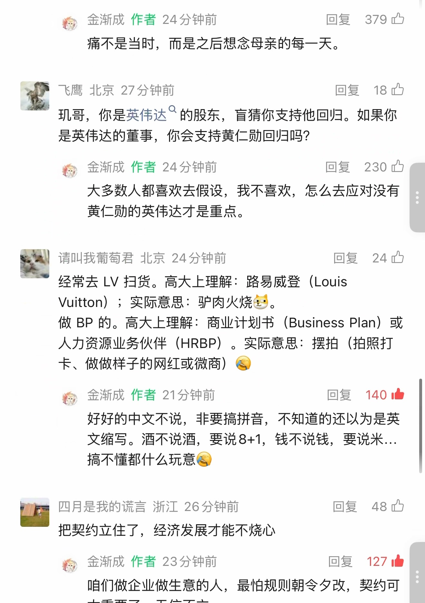
第 10 页 · 原始截图

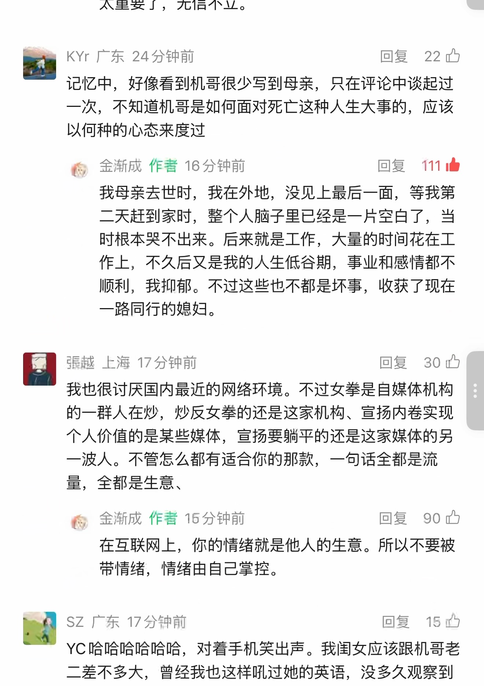
第 11 页 · 原始截图

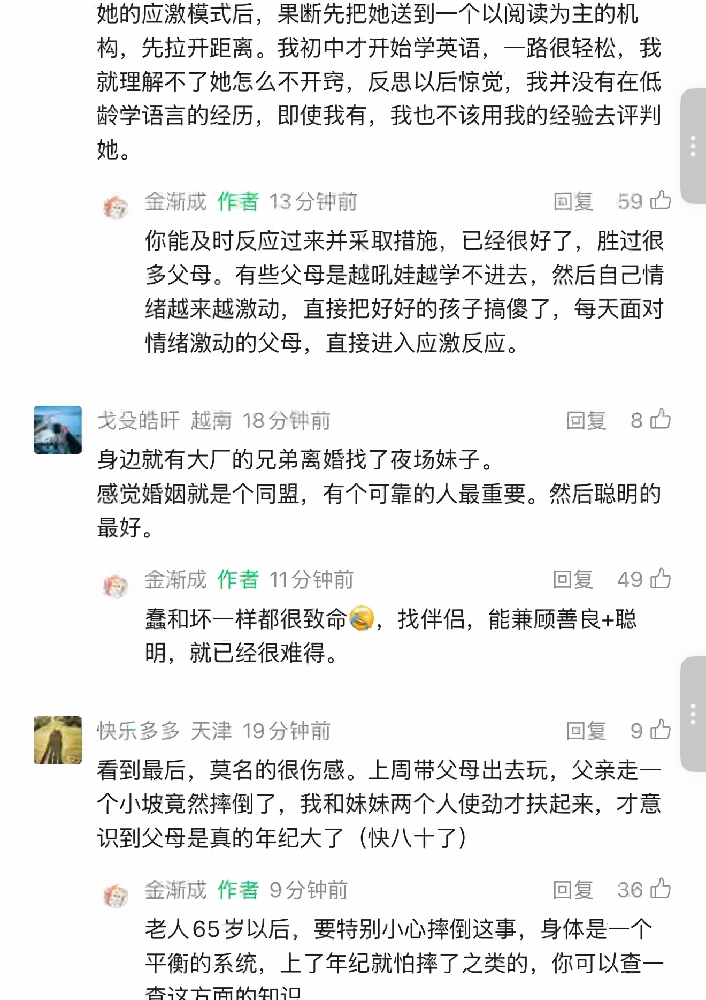
第 12 页 · 原始截图

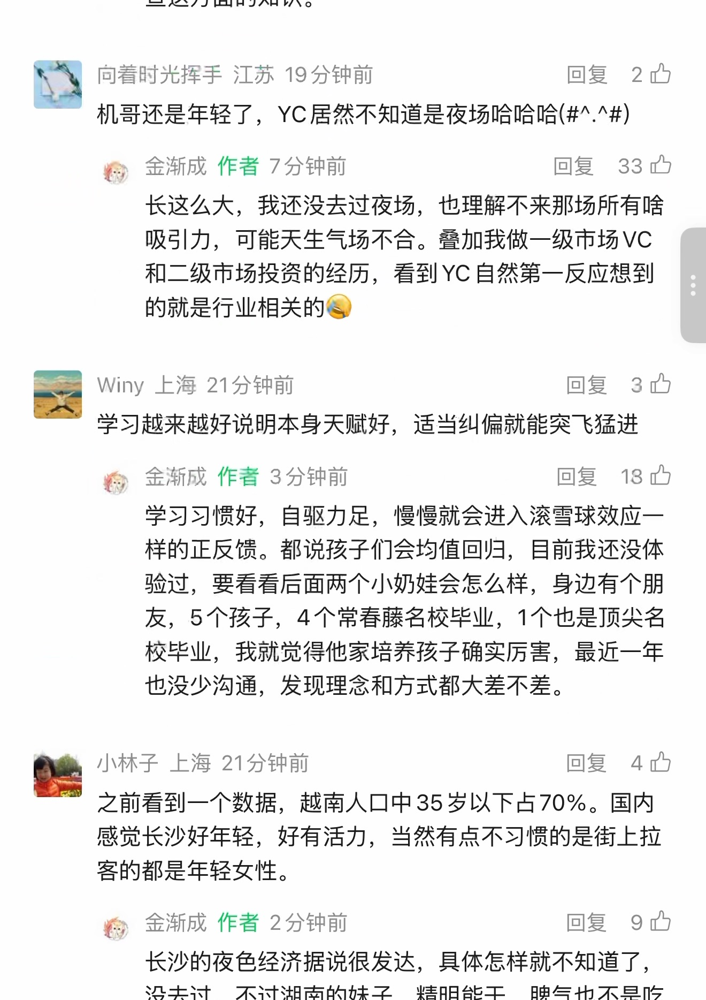
第 13 页 · 原始截图

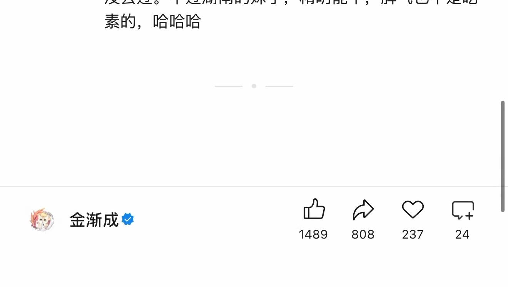
按日期浏览全部来源（同日按条目标识排序）
回到页首